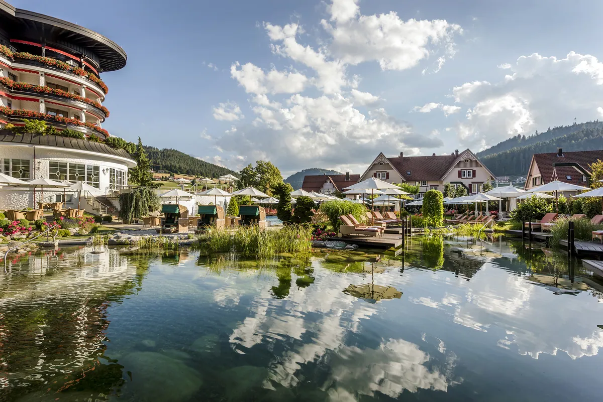
was nach vorn gehörtDas Haus am Teich.
Der Ort zuerst: das Haus am Naturschwimmteich mit dem Tal dahinter. Die Gastgeber stehen nicht auf dem ersten Bild.
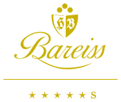
Die Hausregeln · November 2026
5-Sterne-Superior Baiersbronn-Mitteltal Nordschwarzwald
Alles, was das Hotel Bareiss erkennbar macht, an einem Ort: das Wappen und der Schriftzug, die Farben aus dem Restaurant Bareiss, die Schriften, die Form, die Bilder, die Gegenstände des Hauses und der Ton. Damit jedes neue Stück, ob Aushang, Beitrag oder Karte, aussieht wie aus einem Guss.
01Haltung
Ein Tal im Nordschwarzwald, in dem die Familie Bareiss seit dem 1. Mai 1951 Gäste aufnimmt: damals im Kurhotel Mitteltal, heute in dritter Generation mit Hermann, Britta und Hannes Bareiss. Der Ferientag beginnt um sieben in der Pooloase und endet am Abend an einem Tisch mit drei Michelin-Sternen. Die Gestaltung ist hell, warm und ruhig, für den einzelnen Gast.

Der Ort zuerst: das Haus am Naturschwimmteich mit dem Tal dahinter. Die Gastgeber stehen nicht auf dem ersten Bild.
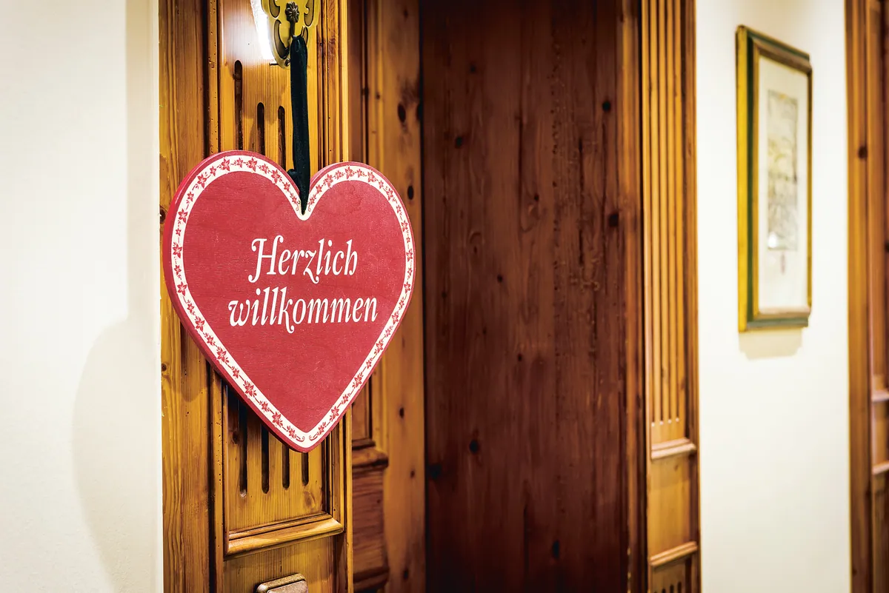
«Herzlich willkommen» an der Zimmertür: So beginnt der Aufenthalt, persönlich und mit Wärme.
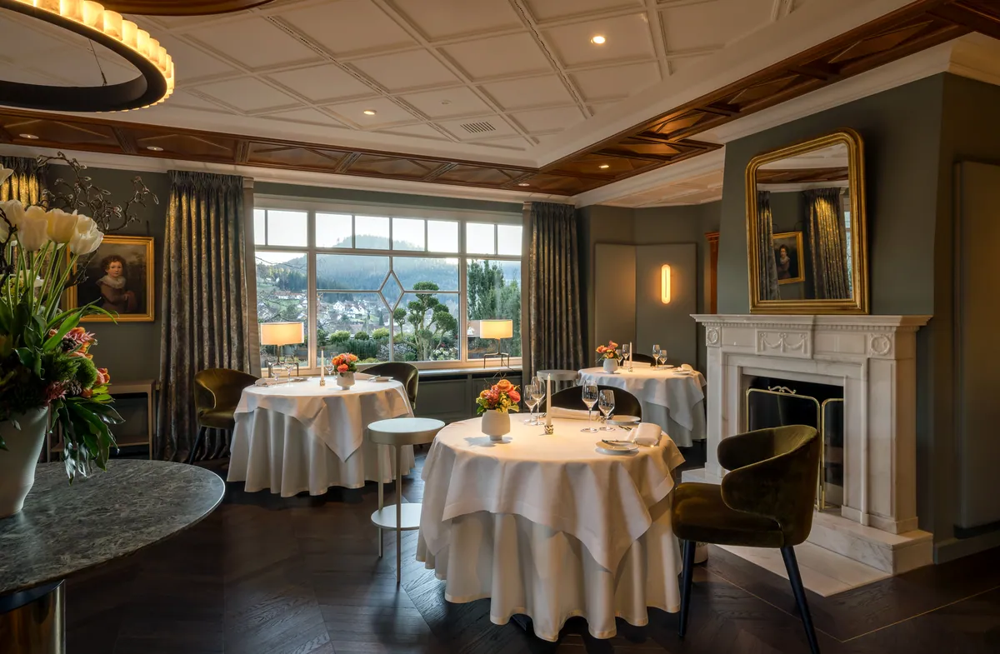
Seit 2007 mit drei Sternen im Guide Michelin, Küchenchef Claus-Peter Lumpp: das dunkle, präzise Kapitel im hellen Haus.
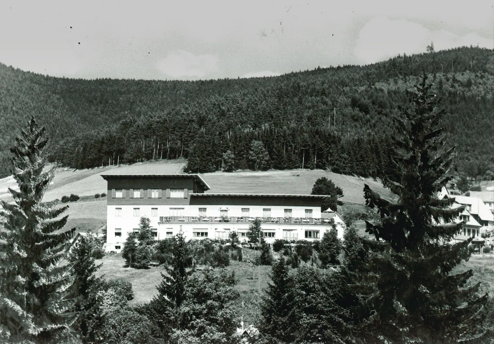
Es gibt kein Nein für den Gast.
Hermine Bareiss · das Kurhotel Mitteltal, 1951
02Wappen
Das Wappen HB mit drei Kugeln kommt aus dem Logo des Hauses. Es steht über den Abschnitten der Website, in der Leiste und als Zeichen im Browser. Es wird immer als Datei eingesetzt, nie nachgezeichnet, und steht nie in einem Kreis oder Siegel.
Rund um das Wappen bleibt ein Viertel seiner Breite frei. Kein Text, kein Bildrand, keine Linie ragt hinein.
Ab 32 Pixel Höhe am Bildschirm, im Druck ab 12 Millimeter. Darunter steht der Name des Hauses als Schriftzug.
Es steht so, wie es gezeichnet ist, in Hausgold, Weiß, Tanne oder dem tieferen Hausgold, ohne Schatten und ohne Rahmen darum. Auf einem unruhigen Foto steht es nie.
03Schriftzug
Der Name «Bareiss» steht als Schriftzug aus dem Logo, als Vektor, nie in einer Schrift nachgebaut. Darunter die Haarlinie und die fünf Sterne mit dem S. Das Logo ganz trägt Wappen, Schriftzug, Linie und Sterne; einzeln stehen die Teile dort, wo das Ganze schon steht oder der Platz quer ist.
04Farben
Die Farben kommen aus dem Haus: Tanne und Salbei von den Wänden des Restaurants Bareiss, Papier vom Tischtuch, Hausgold aus dem Logo, Herzrot vom Herz an der Zimmertür. Jede steht genau so in der Gestaltung der Website. Ein Klick auf eine Farbe kopiert ihren Wert.
Die Wände des Restaurants Bareiss. Sie tragen die dunklen Flächen; darauf wird in Papier geschrieben und in Hausgold betont. Salbei gehört vor allem dem Kapitel Restaurant Bareiss.
#1F2621#3F4A40#5B6658Das Tischtuch: Papier als Grund, Leinen als Fläche darauf. Geschrieben wird in Tinte, einem warmen Dunkelbraun, nie in reinem Schwarz.
#F5F2EA#ECE6D8#2F2A27#6B625DDas Gold des Logos: Haarlinie, Zeichen und der Knauf des Hauptknopfs. Auf Papier steht das tiefere Hausgold. Nie als große Fläche.
#C9B101#E2D27A#968401Das Rot des Herzens «Herzlich willkommen» an der Zimmertür. Es steht nur als Punkt, nie als Fläche, nie als Schrift.
#B4302CTanne trägt. Die dunklen Flächen, der Kopf, der Fuß; Salbei das Kapitel Restaurant Bareiss.
Hausgold betont. Nur als Haarlinie, Etikett, Knauf und Zeichen, nie als große Fläche.
Herzrot nur als Punkt. Nie Weiß auf Weiß, nie reines Schwarz, kein Nachtblau, kein Pink.
05Schrift
Die Hausschrift ist Farnham Display, eine Lizenzschrift von Font Bureau. Für Website und Werkzeuge steht ihre freie Entsprechung: Source Serif 4 im Display-Schnitt, 440, nie fett, nie kursiv. Gelesen wird in Source Sans 3, der neuen Fassung der heutigen Hausschrift Source Sans Pro; kleine Zeilen in Versalien, gesperrt. Offen: ob das Haus eine Lizenz für Farnham Display hat und wofür.
Das Glück hat verschiedene Namen.
Aa Bb Cc Dd Ee Ff Gg Hh Ii Jj Kk Ll Mm Nn Oo Pp Qq Rr Ss ß Tt Uu Vv Ww Xx Yy Zz Ää Öö Üü 0123456789
Gastfreundschaft, die von Herzen kommt. Vertrautheit, die durch persönliche Zugewandtheit entsteht. Was immer Sie zu uns führt, wir heißen Sie herzlich willkommen in der Familie.
Hermine-Bareiss-Weg · 72270 Baiersbronn-Mitteltal
Pooloase7.00Frühstück8.00–11.30Dinner19.00Mitternachtsimbiss23.45
06Form
Die Form kommt aus dem Logo: eine feine Haarlinie in Hausgold, darum viel Ruhe. Platten mit runden Kanten und einer Gold-Haarlinie innen, Kacheln ohne Rahmen, Knöpfe mit Pfeil im Knauf. Die Raute aus dem Rautenfenster liegt sehr leise als Tapete auf Tanne und Salbei.
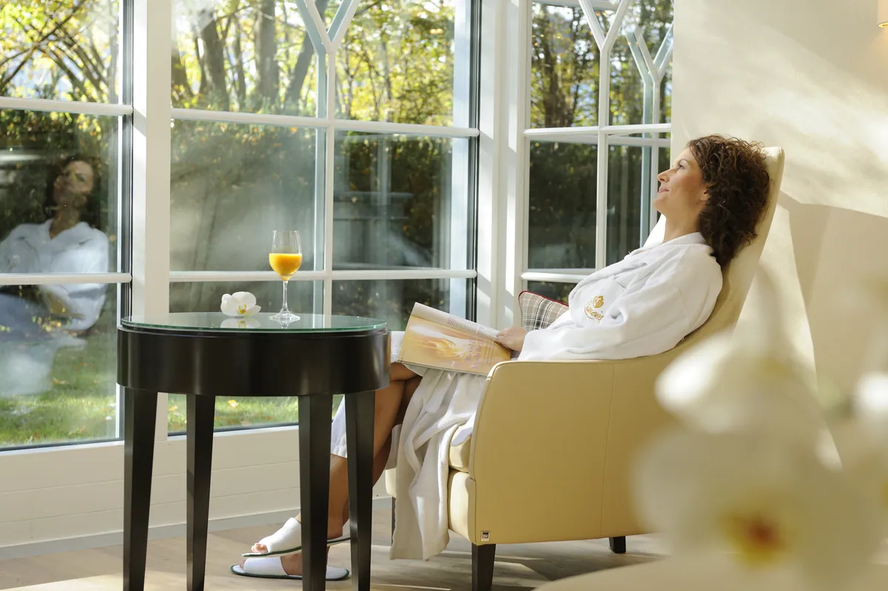
Hausgold mit Knauf in Tanne ist der Hauptweg, einmal je Fläche. Tanne mit Knauf in Hausgold ist jeder Nebenweg.
Kreise, Siegel und runde Medaillons (auch nicht Hase, Hirsch und Eichhörnchen), Tickets, Billetts, Platzkarten, Leuchtschrift, Sticker und Requisiten, Farbverläufe als Übergang.
07Bilder
Nach vorn gehört der Ort: das Haus am Naturschwimmteich mit dem Tal dahinter. Dann der Ferientag, das Restaurant Bareiss, Wasser und Ruhe, die Familie und das Tal. Die Fotos des Hauses sind kräftig und warm, die Bilder des Restaurants kühl und grün; keine Bearbeitung nötig.
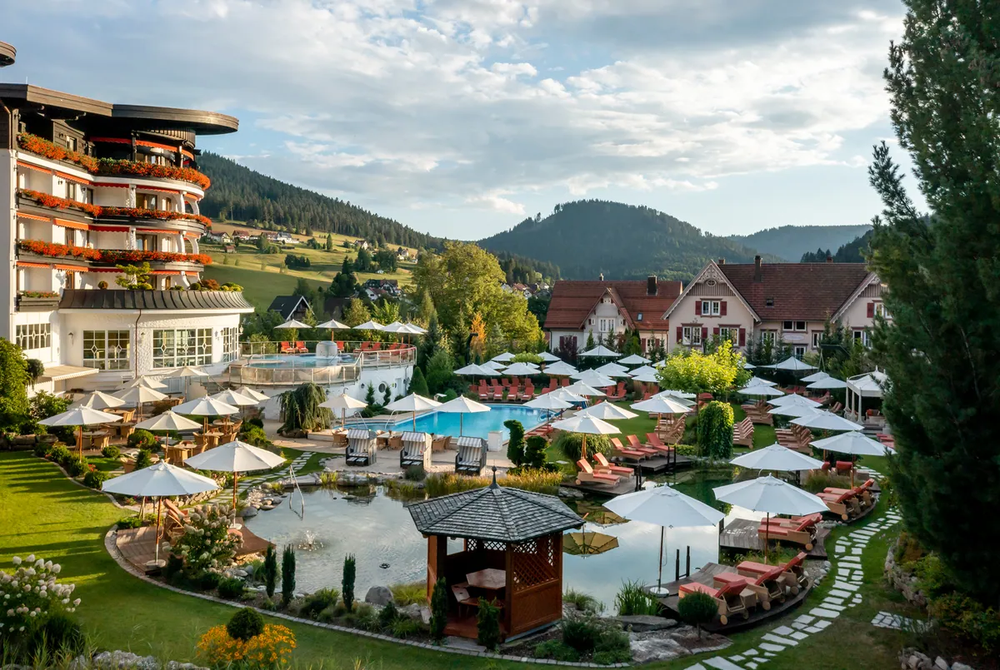
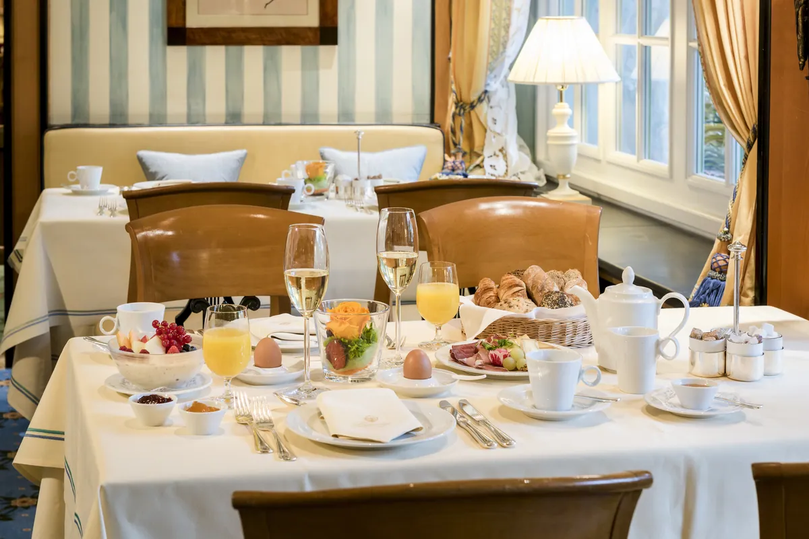
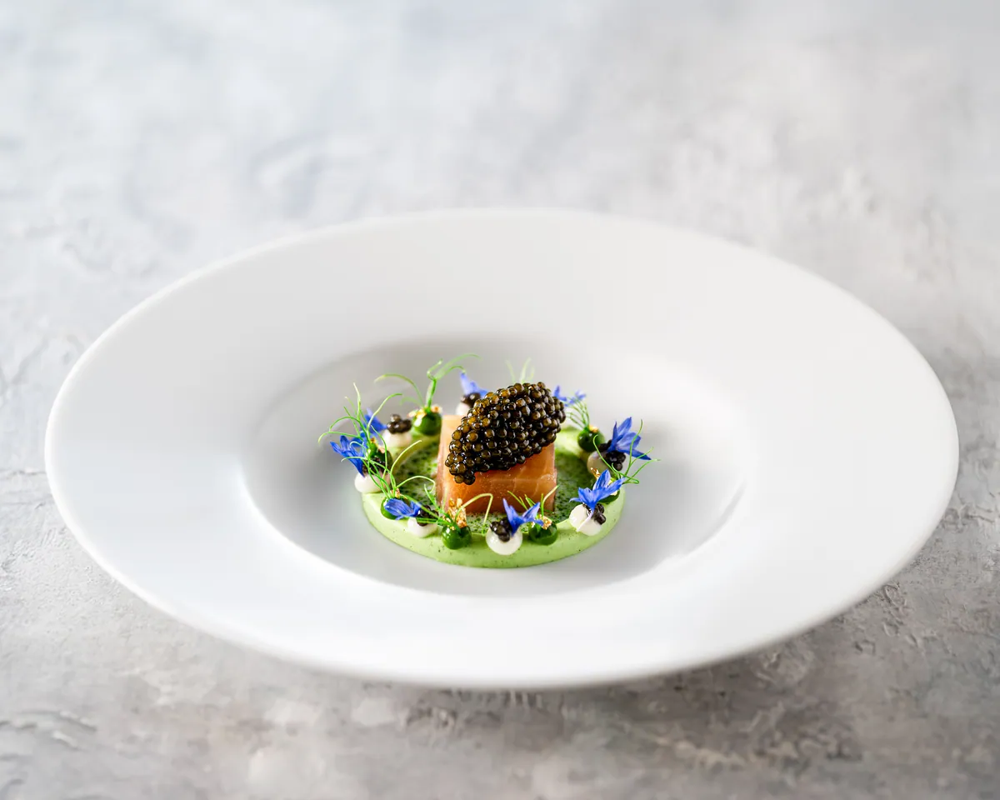
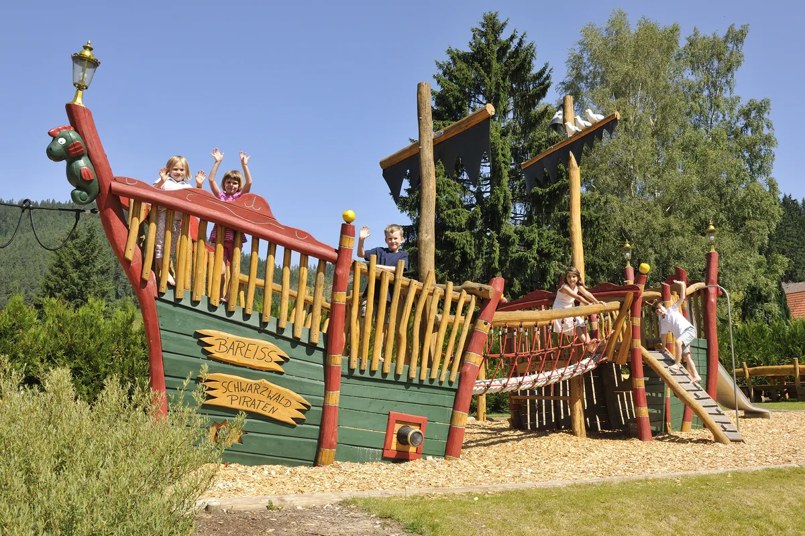
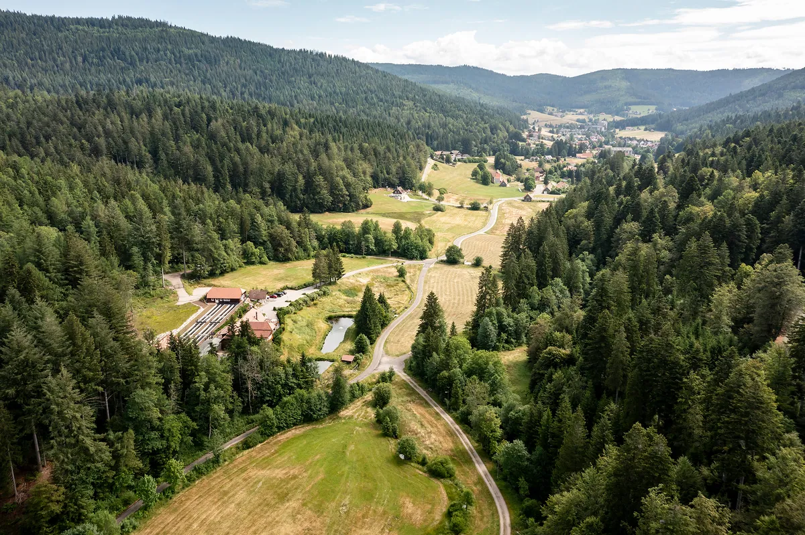
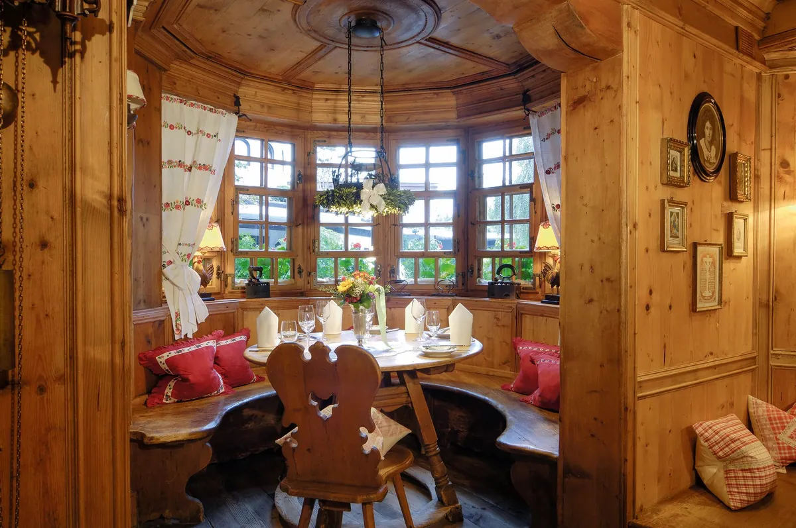
08Gegenstände
Vier Dinge machen das Haus unverwechselbar. Sie liefern Form, Farbe und Sätze für jede Gestaltung; keines wird als Zeichnung nachgemacht.
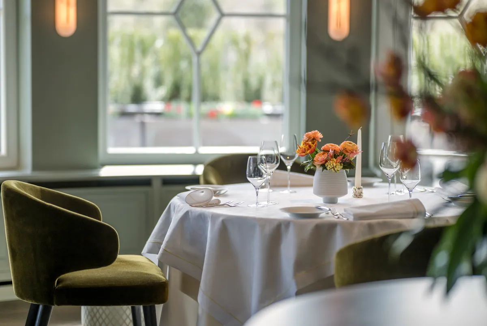
Die Bleiverglasung im Restaurant Bareiss, im Wintergarten und im Beauty-Bereich. Daraus die Raute der Tapete.
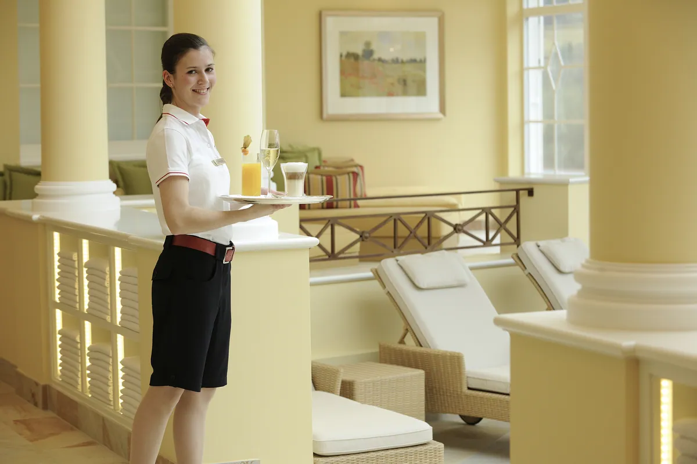
Ab 7 Uhr in der Pooloase bis zum Mitternachtsimbiss ab 23.45 Uhr: der Tag der Halbpension, den es so nur im Bareiss gibt.
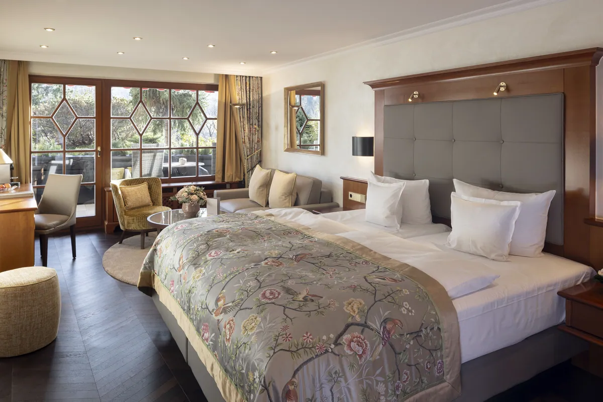
«Das Glück hat verschiedene Namen»: Eulengrund, Weißenbachtal, Orspach, Ellbachtal, Bergmosis, Gartenflügel.
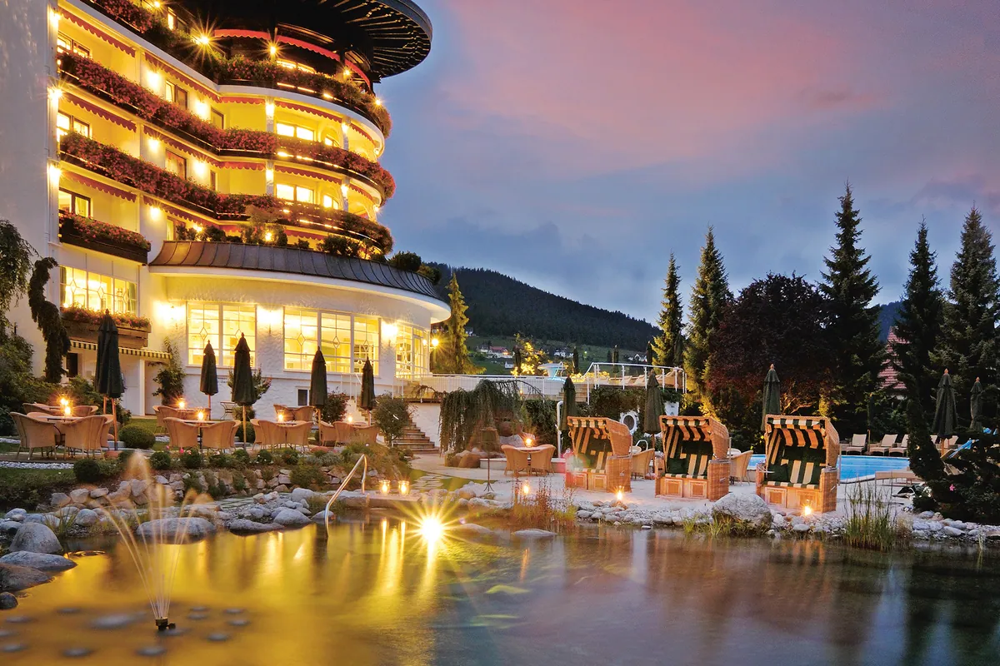
Das Haus am Teich in der Sommernacht: das Gegenstück zum Bild des Tages.
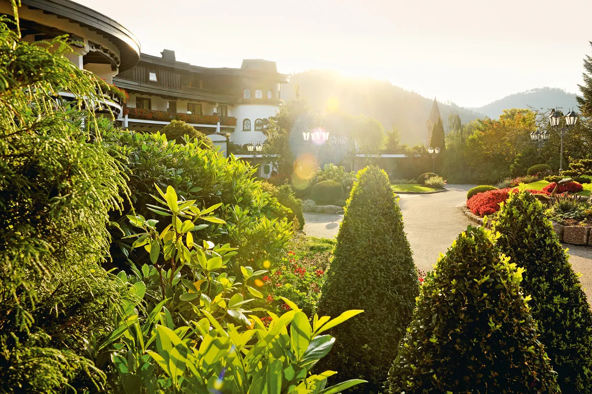
Freie Zeit ist der größte Luxus.
Ein Satz des Hauses
09Ton
Das Haus spricht seine Gäste mit Sie an, warm und persönlich, in deutscher Schreibung mit ß. Es geht um Wertigkeit, Sorgfalt und den einzelnen Gast, nie um Masse. Lieber eine echte Angabe (das Frühstück von 8 bis 11.30 Uhr, das Meerwasser-Außenerlebnisfreibad ganzjährig bei 34 °C) als ein Adjektiv.
10Register
Das Hotel Bareiss ist Familienresort mit Kinderdörfle und zugleich ein Haus mit drei Michelin-Sternen. Darum zwei Register: hell, warm und frei für Haus, Zimmer, Familie, Wasser und Tal; dunkel und präzise nur für das Kapitel Restaurant Bareiss. Wappen, Schriften und Ton bleiben in beiden dieselben.
Papier und Leinen, Tanne für Kopf und Fuß, Hausgold als Linie. Das Haus am Teich, der Ferientag, die Familie, das Tal.
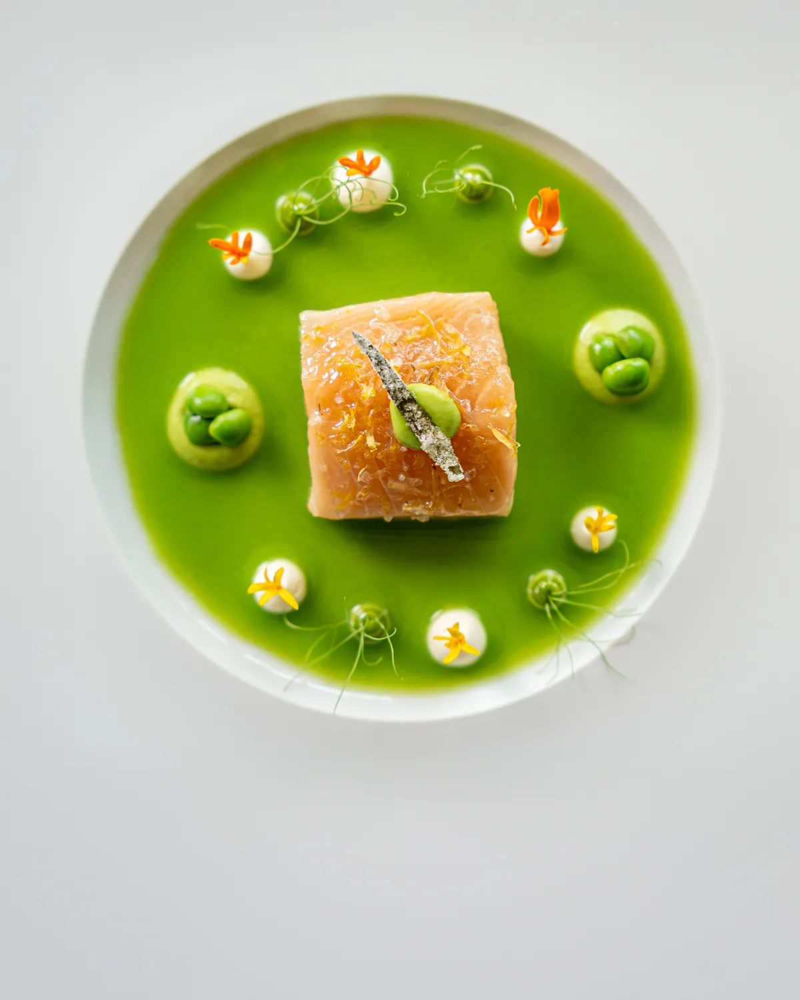
Salbei statt Papier, Hausgold als einziges Licht. Teller, Saal und Team; drei Sterne seit 2007.